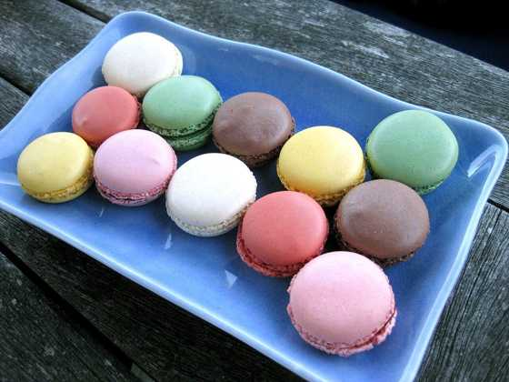
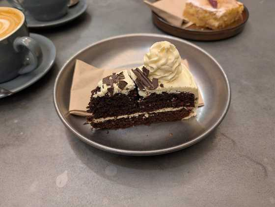
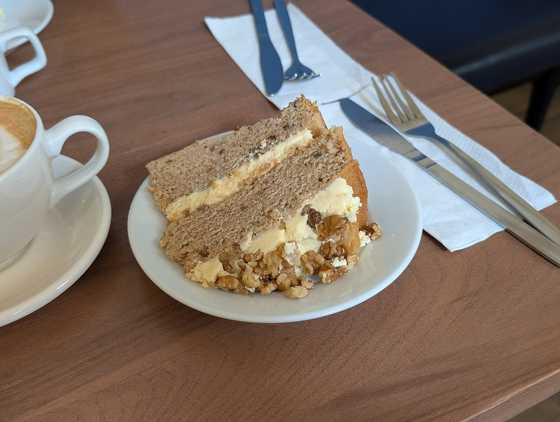
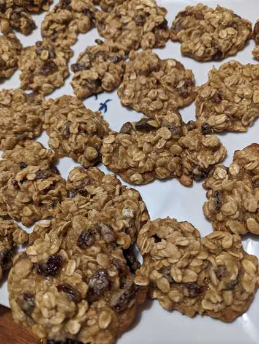

岐阜県大垣市・丸の内
季節の移ろいを、
ケーキと焼き菓子にのせて。
patisserie pipe(パティスリーピペ)は、季節のケーキと焼き菓子のお店です。
お店のこと
季節のケーキと焼き菓子
お店のInstagramのプロフィールには「季節のケーキと焼き菓子」とあり、ホールケーキのご案内や、月ごとの営業日のお知らせも発信されています。所在地は岐阜県大垣市丸の内です。
お店の成り立ちや店名の由来については、公開されている情報から確認できませんでした。店名の「pipe」は、お菓子づくりで生クリームなどを絞る「パイピング」を思わせる、というのは制作側のイメージで、お店の考えを示すものではありません。
情報源: Instagram @patisserie_pipe



写真はフリー素材のイメージで、お店で提供しているものそのものではありません。
メニュー
ケーキと焼き菓子
季節のケーキ
季節に合わせたケーキ。内容・価格は 準備中
焼き菓子
焼き菓子の取り扱いがあります。内容・価格は 準備中
ホールケーキ
Instagramのハイライトにご案内があります。詳細は 準備中








口コミ
こんなお声が届きそうです
以下は制作側が作成したイメージ例で、実在の声ではありません。
イメージ例
季節ごとにケーキが変わるので、来るたびに楽しみです。
イメージ例
焼き菓子は手みやげにぴったりでした。
イメージ例
誕生日のホールケーキをお願いして、家族みんな笑顔になりました。
アクセス
ご案内
| 所在地 | 〒503-0888 岐阜県大垣市丸の内2丁目21 |
|---|---|
| 電話 | 準備中 |
| 営業時間 | 準備中 |
| 定休日 | 準備中 |
| SNS | Instagram @patisserie_pipe |
営業日はInstagramで月ごとに案内されています。最新情報はInstagramをご覧ください。